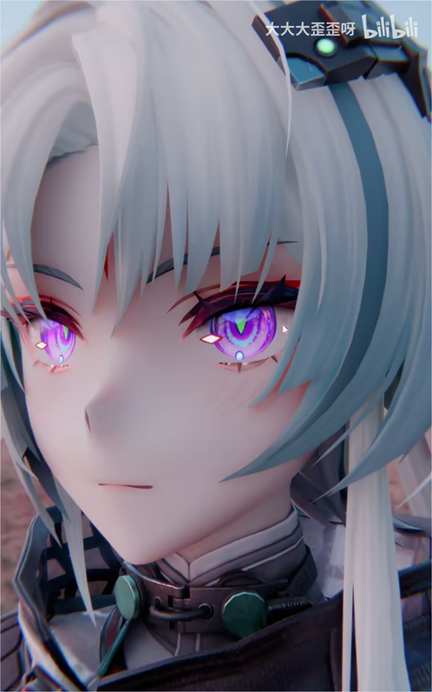
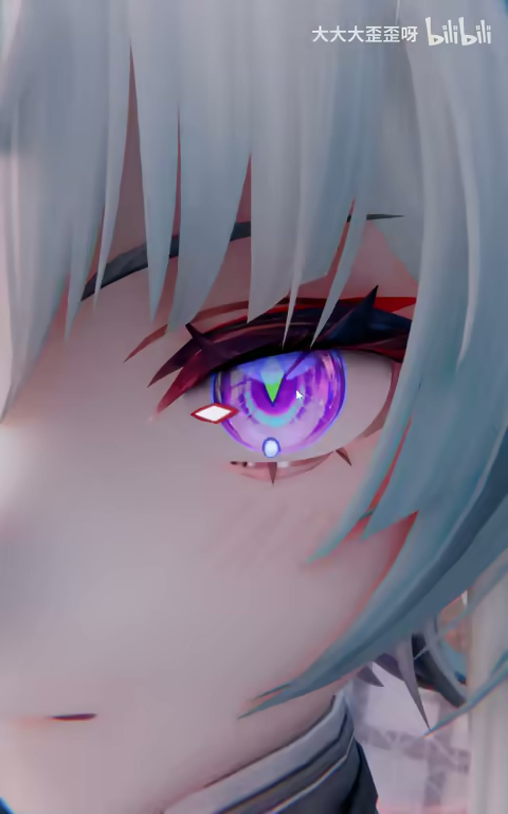
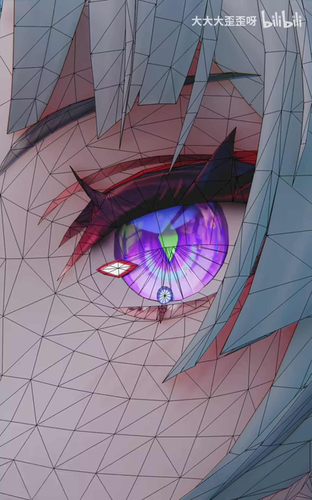
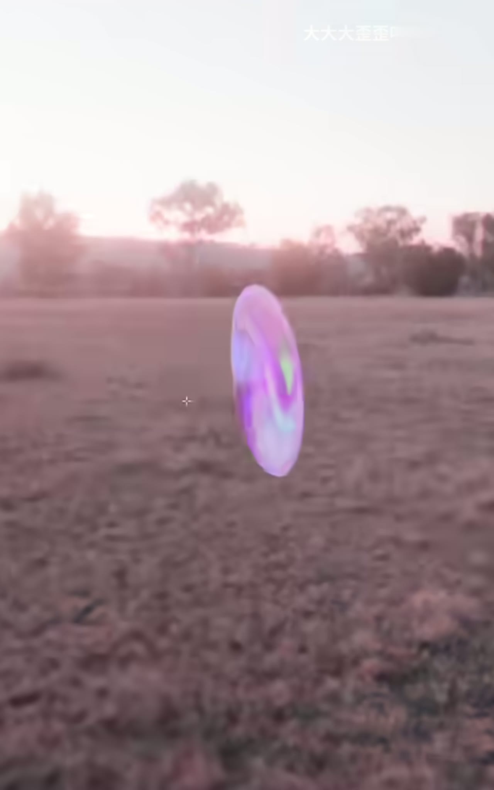
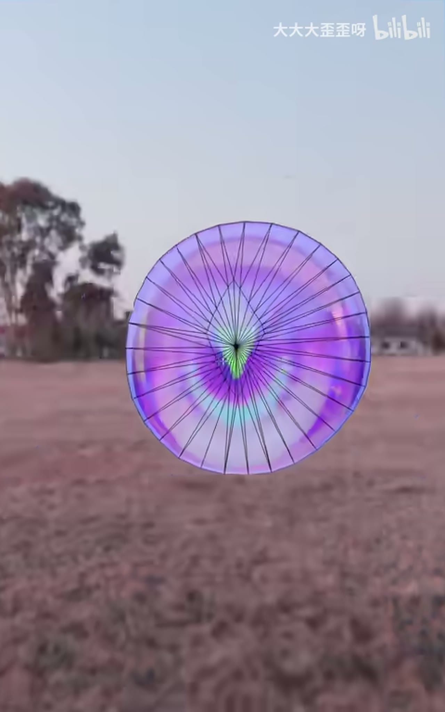
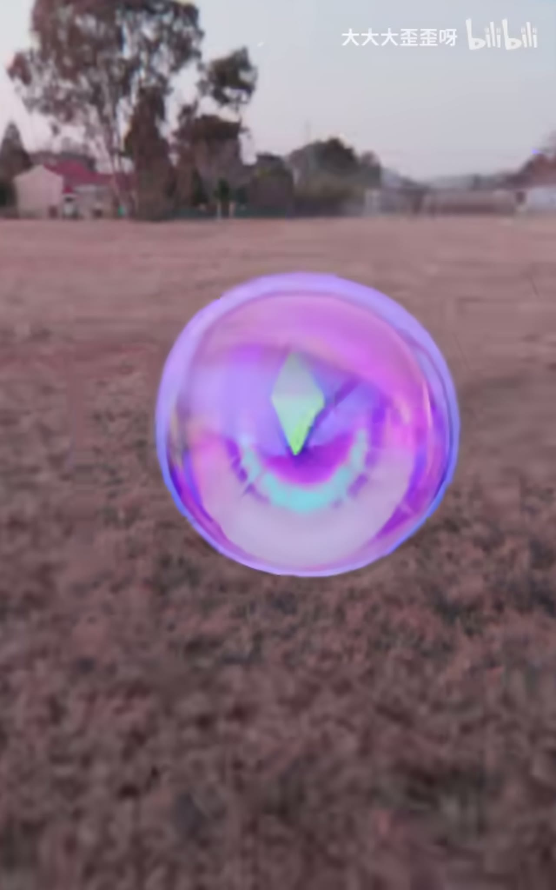
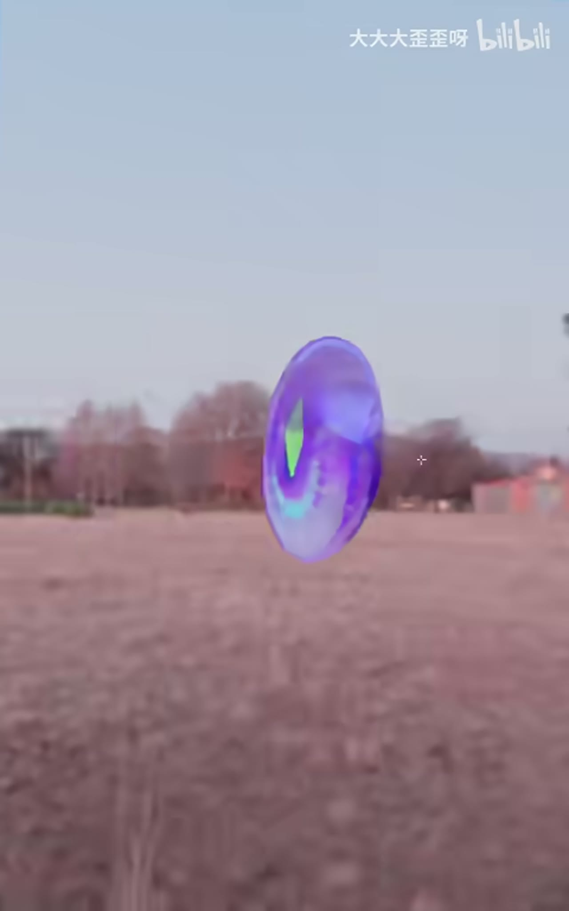
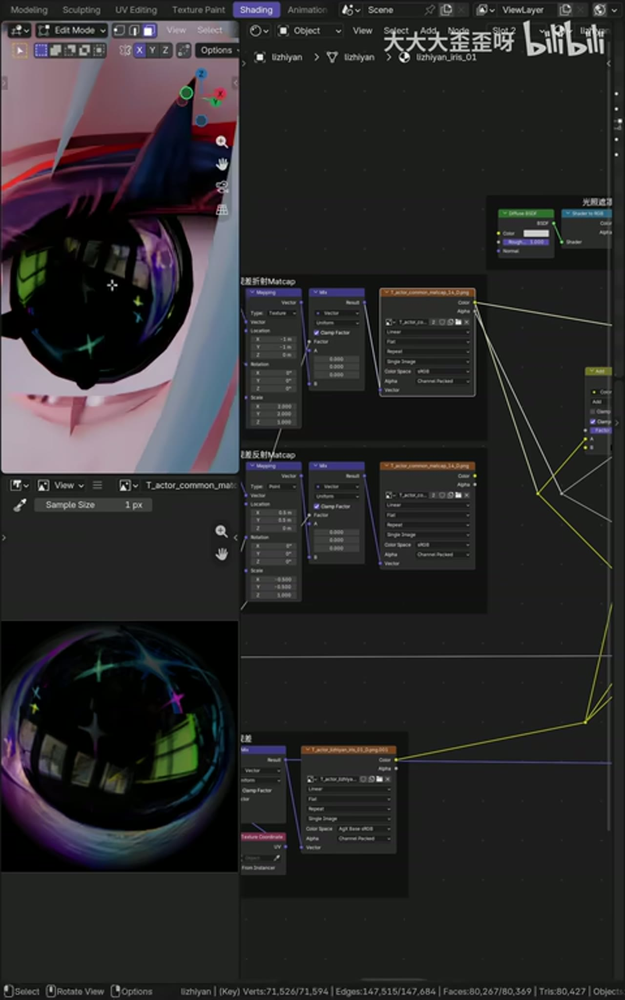
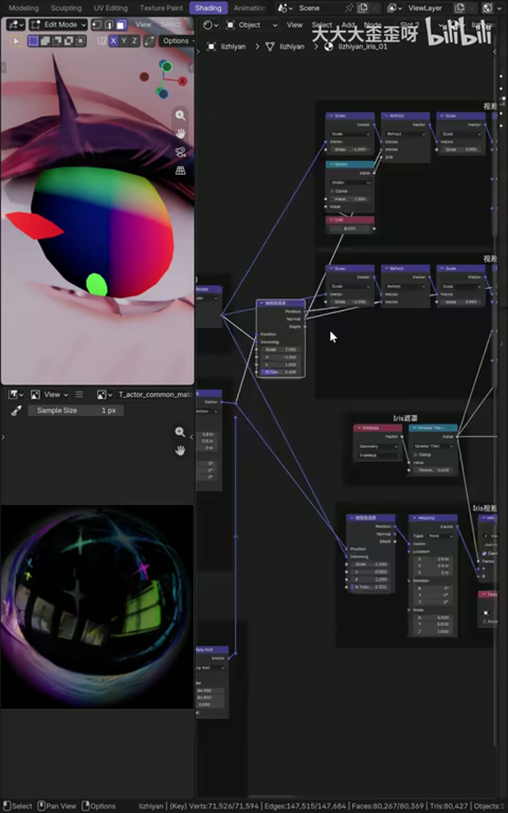
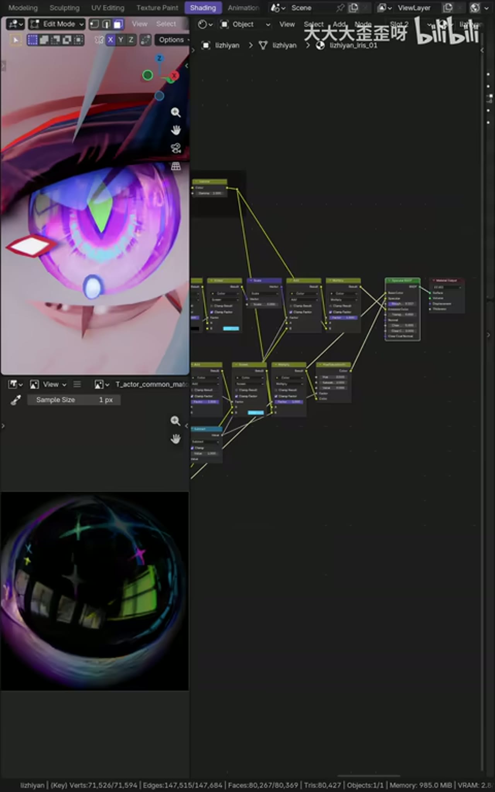

眼睛
抛物面眼睛的视差、折射和多层高光
叠好的眼睛：几种颜色分开，不堆在正中


成品不是一颗写实玻璃球正中一个白点。虹膜是紫里带蓝的旋涡，绿色三角贴在虹膜偏上的位置；一块白菱形落在虹膜外侧的眼白上，外圈压着更深的红边；蓝水滴贴着虹膜下缘。主高光偏白，辅高光是绿和蓝，红边只是一小块更深的颜色，三层不叠在同一个点上。
虹膜是浅抛物面，高光是旁边另几块小面



虹膜网格是一扇浅抛物面：边从四周往下缘收，汇聚点不在几何圆心，而在偏下的位置，绿色就坐在这个顶点附近。侧面看过去，整片几乎没有厚度，只有边缘一圈亮边，那是薄片转过去之后的折射，不是球体的轮廓。白菱形和蓝圆不在这扇放射面里，是贴在眼白和下缘的另外两块小面，所以它们不会跟着虹膜顶点一起挤到正中。
视角一转，高光沿着抛物面滑开


正对镜头时，绿块在盘面中部，青色弧留在下方。物体转开之后，圆盘变窄，绿块滑到侧缘，青色还跟在更靠下的位置。高光不是画死在贴图正中的圆点，而是贴在这块抛物面上，视线一变就沿着曲面挪开。环境是户外的天和地面，边缘的紫和青也跟着这张环境亮，不是另外打的一盏死灯。
折射和反射的镜面是另一层颜色

这一层把紫虹膜拿掉之后，眼睛是一块深色玻璃。里面有绿色的窗形反射，还有青、粉、绿的星形亮点，左下那颗预览球是同一张镜面，星点位置对得上。节点上折射那组和反射那组是分开的：上面一组标题是视差折射 Matcap，Mapping 类型是 Texture，接到一张 Matcap 图；下面一组是视差反射 Matcap，Mapping 类型是 Point，接到另一张 Matcap 图。两组都先经过 Mix，再往右送。镜面高光的颜色来自这两张图，不跟虹膜的紫和绿混成一种颜色。文件名在画面里是糊的，这里不抄。
抛物面视差把色块推离中心

把坐标涂成颜色时，虹膜左侧偏蓝，上方偏绿，右侧偏品红，这是在看视差把取样点推到了哪。红块贴在左缘，绿点落在中部偏下，都不在正中。推动它们的是节点组抛物面视差：进来的是 Position 和 Incoming，出去的是 Position、Normal、Depth，再接进 Refract。画面上能看见组里还有缩放和偏移，数字太糊，不抄。Iris 遮罩用属性把虹膜范围切出来，Iris 视差再去采虹膜那张图。左下的预览球这时仍是带星点的镜面，说明调试色只换了虹膜这一层，镜面高光还留着。
几层再叠回虹膜

叠回去之后，左上又是紫旋涡、偏上的绿三角、外侧白菱形和红边、下缘蓝水滴。右上的颜色先经过 Add、Screen、Multiply 这一串混合，再进 Specular BSDF，最后到 Material Output。左下预览球没有变回紫虹膜，还是深色玻璃上的彩色星点，所以镜面和虹膜颜色是两条线，只在眼睛上叠在一起。从画面上看，顺序是：抛物面提供会滑动的表面，视差把取样点推离中心，折射和反射两张 Matcap 提供另一种颜色的镜面高光，最后盖在虹膜颜色上。
搬到 VRoid
这一节是对照，不是这条视频里的操作。视频里没有 VRoid 菜单。
眼睛比写实略大。成片里这张脸的眼睛占了上半张脸很大一块。VRoid 里用眼睛大小往略大调，按二次元的比例，不要收成真人眼。不要去对某个百分比。
高光做成两到三层，在眼睛贴图上画。主高光偏白，对应眼白上那块白菱形；辅高光带另一种颜色，对应虹膜里的绿块和下缘的蓝点；需要压边时，用一小块更深的颜色勾住主高光，对应菱形外面的红边。VRoid 里没有这条视频的抛物面视差和折射节点，不要去找同名菜单。
高光不要堆在正中。白菱形放在虹膜外侧的眼白上，绿块略偏上，蓝点贴着虹膜下缘。三块错开，转头时才不会糊成瞳孔中间的一团。